САЙТ · ЧЕТЫРЕ ПУНКТА ПРИЁМКИ
Что поменялось на вашем сайте
Главную проверили и предложили точечные правки; вход исправили; один дизайн переделали в настоящем кабинете и гостевой странице. Отметьте решение и комментарий у каждого пункта.
ГЛАВНАЯ · УТВЕРЖДЁННЫЙ ДИЗАЙН НЕ МЕНЯЛИ
Текст, композиция и сборка
Сейчас: на узком экране семь юридических ссылок футера сливаются; в cookie-окне именно старого публичного preview ссылки на политики дали 404. В каталоге половина тем скрыта под английским «Load more». Отзывы и обещание цены требуют подтверждения владельцем. Статус: это предложения, не внедрённые исправления.
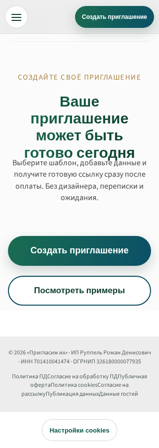
Снимка «ПОСЛЕ» нет: утверждённую главную не переделывали. Перечень предложений выше — не выполненные исправления.
Откройте главную целиком: первый экран, шесть шаблонов, тариф, отзывы, FAQ, финальный CTA и футер. Какие точечные правки разрешаете? Не утверждайте новую цену без сверки.
Открыть вашу главную ↗ВХОД И РЕГИСТРАЦИЯ · ЛОКАЛЬНАЯ ПРАВКА
Форма без ложного «отправить ещё раз»
Было: на телефоне повторная отправка письма видна ещё до регистрации, CTA обещал немедленное продолжение, ошибки плохо объявлялись с клавиатуры. Стало: повторная отправка скрыта до подходящего ответа, CTA сообщает о письме, поля получают понятные ошибки; reset без ссылки показывает объяснение.
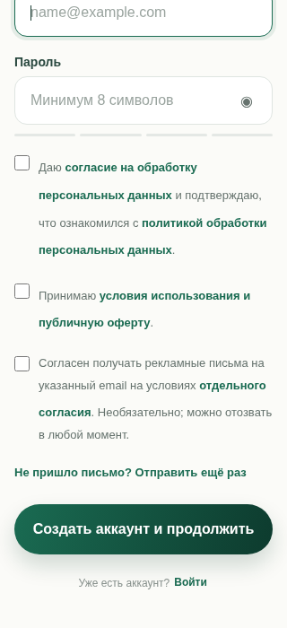
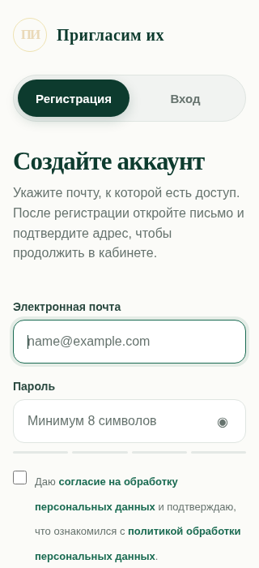
Проверьте с телефона, понятен ли путь: почта → письмо → кабинет, и видно ли, где вход. В этом публичном просмотре форма специально не отправляется.
Открыть регистрацию ↗ Открыть вход ↗ОДИН ДИЗАЙН · В КАБИНЕТЕ И У ГОСТЯ
«Священный сад»: весь путь, не только обложка
Было: тёмный первый экран, однообразная середина и финал «ЖДЁМ ВАС»; фото пары из кабинета не попадало на обложку гостя, FAQ подмешивал вопросы анкеты. Стало в локальном кандидате: переделаны открытие, логистика, расписание, середина и финал с именами/датой; личное фото на обложке, FAQ из пар вопрос–ответ.
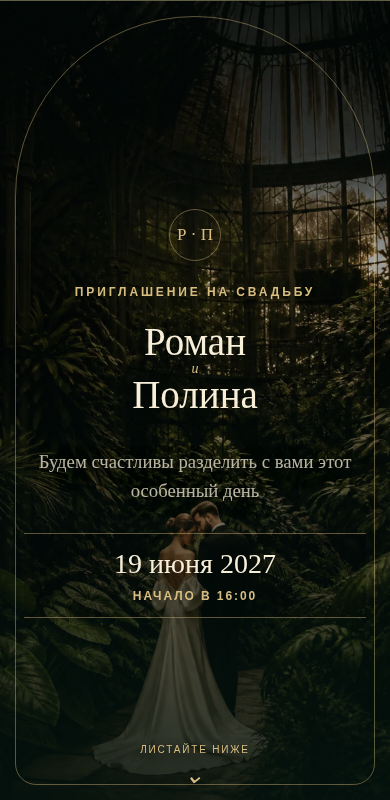
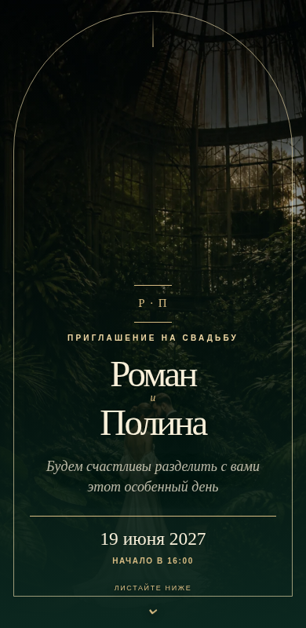
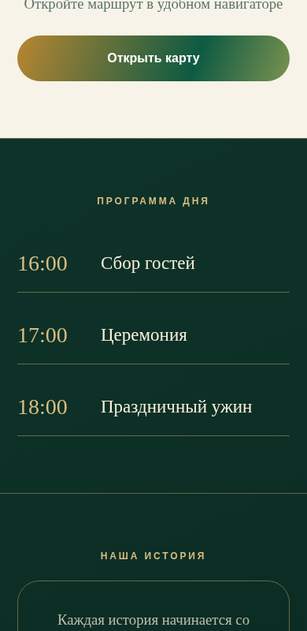
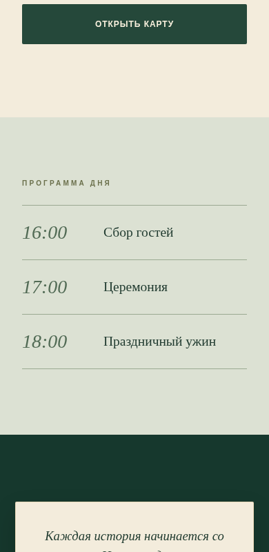
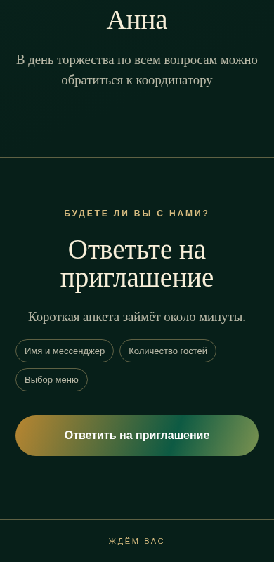
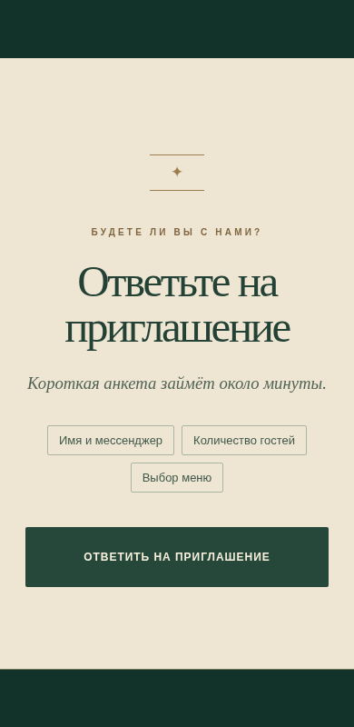
Снимки взяты из одного синтетического сценария до/после на одинаковых ширинах. Это ещё не оплаченная или проверенная реальная публикация.
После кнопки «Открыть» пролистайте место, программу, историю и конец. Оцените именно атмосферу, читаемость, длину и переход к ответу. Фото всё ещё может показаться тёмным — скажите прямо.
Открыть приглашение ↗ Открыть кабинет ↗КАБИНЕТ · 23 ШАГА
Точная гостевая версия по кнопке предпросмотра
Было: встроенный телефон назывался «живым предпросмотром», но отрисовывался отдельно от гостевой страницы. Стало: встроенная схема прямо названа схемой; кнопка полного просмотра открывает настоящий гостевой renderer с текущими полями в iframe. Он не отправляет RSVP и не сохраняет данные в этом публичном демо.
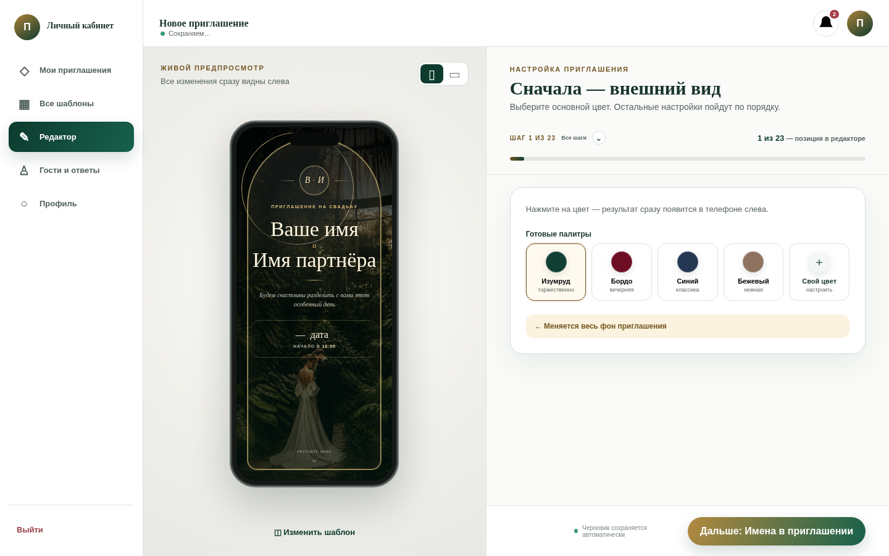
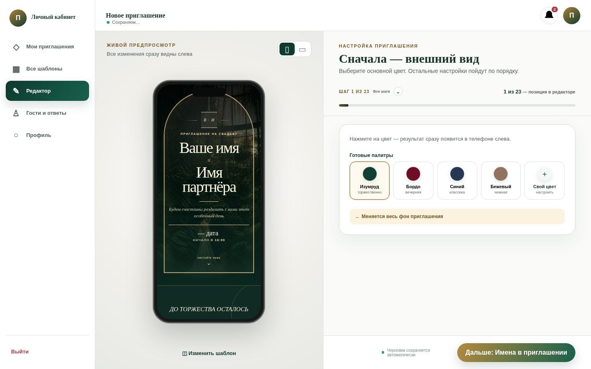
Кадры кабинета показывают его встроенную схему, а не iframe. Совпадение данных в полном просмотре проверялось отдельно; сквозная публикация на сервере не проверялась.
Откройте кабинет, измените имена на шаге 2, нажмите «Предпросмотр для гостя» или «На весь экран». Проверьте те же имена и общий вид. Демо-правки останутся только в вашем браузере.
Проверить кабинет ↗ВАШ ОТВЕТ
Один отзыв по всем пунктам
«Сохранить пункт» оставляет черновик только в этом браузере. Чтобы я получил комментарии, отметьте все четыре пункта (можно «Не проверял»), нажмите «Передать отзыв», а в открывшемся приватном GitHub Issue — Submit new issue. Копировать текст не нужно; нужен вход в GitHub. Отправка не разрешает production-релиз.
Без данных гостей, паролей и реквизитов.